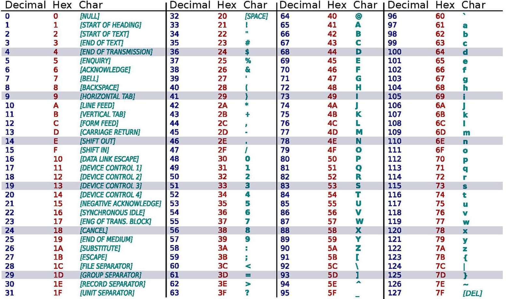
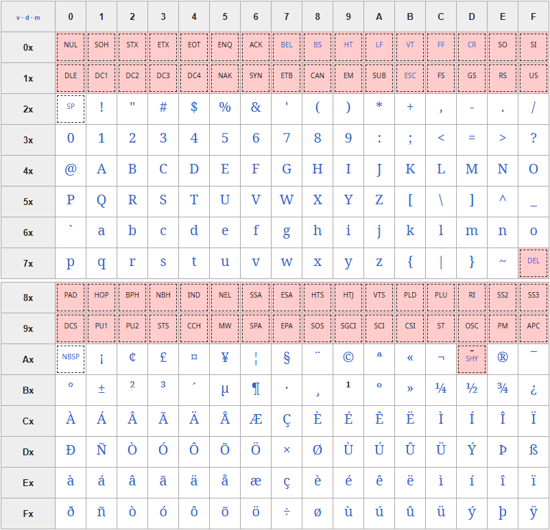

Représentation d’un texte en machine
Un ordinateur ne manipule que des nombres binaires (0 et 1), alors comment fait-il pour représenter du texte, les lettres, les chiffres et autres symboles que l'on utilise ? C'est ce qu'on appelle l'encodage.
Cours
Un système d'encodage établit une correspondance entre des caractères (lettres, chiffres, ponctuation) et des nombres. Chaque caractère se voit attribuer un code numérique unique, que l'ordinateur peut stocker et manipuler.
L'encodage ASCII
Cours
Créé dans les années 60, l'ASCII (American Standard Code for Information Interchange) est la base de presque tous les encodages actuels. Il utilise 7 bits pour coder chaque caractère, ce qui permet de représenter \(2^7 = 128\) caractères :
- Les chiffres 0 à 9 (de 48 à 57).
- Les lettres majuscules A à Z (de 65 à 90)
- Les lettres minuscules a à z (de 97 à 122).
- Les signes de ponctuation courants.
- Des caractères spéciaux (tabulation, nouvelle ligne, etc.) et des caractères de contrôle non imprimables pour des protocole de communication et des contrôles de périphériques (Fin de transmission, etc. ).
Le tableau suivant montre l’encodage des 128 caractères ASCII : 
L'ASCII fonctionne très bien pour l'anglais, mais il ne contient aucun caractère accentué (é, è, à, ç, etc.), aucun symbole spécifique à d'autres langues, et encore moins de caractères d'alphabets non latins (cyrillique, arabe, chinois, etc.).
L'encodage ISO-8859-1 (Latin-1)
Cours
Pour résoudre le problème des accents, ISO-8859-1, aussi appelé Latin-1, utilise 8 bits par caractère, permettant de coder \(2^8 = 256\) caractères :
- Les 128 premiers caractères (0 à 127) sont identiques à l'ASCII.
- Les 128 caractères suivants (128 à 255) ajoutent les caractères accentués et symboles nécessaires aux langues d'Europe occidentale (français, espagnol, allemand, etc.). On y trouve : é, è, ê, ë, à, ù, ç, ñ, ö, etc.
Le tableau suivant1 montre l’encodage des 256 caractères ISO-8859-1. Les titres des lignes et des colonnes indiquent les valeurs hexadécimales correspondant aux positions codées assignées à chaque caractère, par exemple, la valeur hexadécimale de la position codée assignée à la lettre « L » est \(4C_{16}\), soit 01001100 en binaire ou 76 en décimal.

Si l'ISO-8859-1 est une amélioration de l'encodage ASCII, il ignore encore quelques caractères européens comme le symbole de l’euro € (qui n’existait pas encore lorsque ce jeu a été normalisé) ou certaines des lettres normalement nécessaires à certaines langues théoriquement couvertes (comme les lettres « œ », « Œ » et « Ÿ » en français, ou les lettres « š » et « Š » en finnois).
Par ailleurs, bien qu'utile pour l'Europe occidentale, ISO-8859-1 ne peut pas représenter les caractères d'autres régions du monde. Il existe d'autres variantes (ISO-8859-2 pour l'Europe centrale, ISO-8859-5 pour le cyrillique, etc.), mais on ne peut pas mélanger plusieurs alphabets dans un même document.
Le standard universel : Unicode et UTF-8
Face à la multiplication des systèmes d'encodage incompatibles entre eux, le consortium Unicode a créé un répertoire universel de caractères. L'objectif : attribuer un numéro unique (appelé "point de code") à chaque caractère de chaque langue. Unicode contient actuellement plus de 140 000 caractères, incluant :
- Tous les alphabets (latin, cyrillique, arabe, hébreu, grec., etc.).
- Les idéogrammes chinois, japonais et coréens.
- Les émojis.
- Des symboles mathématiques, musicaux, etc.
Chaque point de code s'écrit sous la forme U+xxxx où chaque chiffre x est un caractère hexadécimal avec au moins quatre chiffres. Les points de code vont de U+0000 à U+10FFFF.
En Python, la fonction ord renvoie le code Unicode d'un caractère en décimal :
et inversement, la fonction chr renvoie le caractère d'un point de code :
Les opérateurs de comparaison entre caractères ==, < et > comparent les points de code dans l'ordre lexicographique (ou « ordre du dictionnaire »).
>>> 'a' < 'A'
False
>>> '12' < '2'
True
>>> chr(0x1F600)
'😀'
>>> chr(0x1F602)
'😂'
>>> '😀' < '😂'
True
En séparant le point de code (le sens) de l'encodage (le stockage), Unicode permet de représenter tous les systèmes d'écriture du monde dans un seul standard. Il existe plusieurs encodages pour la table Unicode :
-
UTF-32 : Utilise toujours 4 octets. Simple mais prend beaucoup de place.
-
UTF-16 : Utilise généralement 2 octets (parfois 4). Utilisé par Windows et Java en interne.
-
UTF-8 : Utilise un nombre variable d'octets (1 à 4). C'est le plus courant sur le web.
Prenons l'exemple du caractère "é". Son point de code est U+00E9.
L'encodage UTF-32 est la traduction directe du point de code sur 4 octets : 00 00 00 E9 en hexadécimal ou encore 00000000 00000000 00000000 11101001 en binaire.
L'encodage UTF-8 ne nécessite que 2 octets : C3 A9 en hexadécimal ou 11000011 10101001 en binaire (l'encodage UTF-8 est expliqué en exercice).
Le mot « météo » est donc encodé en UTF-8 par 6D C3 A9 74 C3 A9 6F :
6Dpour « m »C3 A9pour « é »74pour « t »C3 A9pour « é »6Fpour « o »
donc avec seulement 7 octets pour 5 caractères, ce qui est bien moins que les 20 octets en UTF-32 !
Notez qu'un logiciel lisant cet encodage en format ISO-8859-1 affichera « météo » au lieu de « météo », car C3 encode la lettre « à » et A9 la lettre « © » en ISO-8859-1. C'est à l'origine de la majorité des bugs d'affichage de caractères accentués sur Internet !
Un autre avantage d'UTF-8 est de permettre d'utiliser tous les caractères, symboles, emojis, etc. en même temps. Par exemple, texte "Hello 你好" (anglais + chinois) peut être représenté dans le même fichier, ce qui était impossible avec ASCII ou ISO-8859-1.
Cours
UTF-8 (Unicode Transformation Format - 8 bits) est l'encodage Unicode le plus répandu. Il s’agit d’un encodage à longueur variable car chaque caractère est encodé sur 1, 2, 3 ou 4 octets :
- Les caractères ASCII (les plus courants) sont codés sur 1 octet.
- Les caractères accentués européens utilisent 2 octets.
- De nombreux autres caractères (emojis, symboles) utilisent 3 ou 4 octets.
UTF-8 offre de nombreux avantages :
- Compatibilité avec ASCII : tout fichier ASCII valide est aussi un fichier UTF-8 valide.
- Universalité : on peut mélanger tous les alphabets dans un même document.
- Efficacité : les textes en langues occidentales restent compacts car les caractères courants utilisent peu d'octets.
- Standard : C'est le standard du Web aujourd'hui.
C'est l'encodage qu'il est actuellement recommandé d'utiliser.
Comparaisons
Cours
| Critère | ASCII | ISO-8859-1 | Unicode/UTF-8 |
|---|---|---|---|
| Nombre de caractères | 128 | 256 | Plus de 140 000 |
| Taille par caractère | 7 bits | 1 octet fixe | 1 à 4 octets variable |
| Langues supportées | Anglais | Europe occidentale | Toutes |
| Avantage | Très léger | Gère le français | Universel |
| Inconvenient | Pas d'accents | Incompatible avec le reste du monde | Fichiers parfois plus lourds |
| Usage actuel | Limité | Décroissant | Standard du web |
Convertir un texte dans différents formats d’encodage
Même si UTF-8 est devenu le standard, on rencontre encore d'autres encodages pour des raisons historiques. Certains anciens systèmes ou fichiers utilisent toujours ISO-8859-1 ou d'autres encodages. Et quand on ouvre un fichier encodé dans un certain format en utilisant un décodeur différent, on obtient des caractères étranges à l'écran (ex: é au lieu de é).
Une même suite de bits peut être interprétée différemment selon l'encodage choisi. Il est donc important de savoir identifier et convertir entre différents formats.
Les méthodes Python encode et decode transforment une chaîne de caractères (type str) en une suite d'octets (bytes) et réciproquement (les caractères ASCII sont encodés tels quels). Elles permettent de passer d'un encodage à l'autre :
>>> "m".encode()
b'm'
>>> "é".encode("utf-8")
b'\xc3\xa9'
>>> "é".encode("iso-8859-1")
b'\xe9'
>>> b'\xc3\xa9'.decode("utf-8")
'é'
>>> b'\xc3\xa9'.decode("iso-8859-1") # le bug classique d'un encodage utf-8 lu en latin-1 !
'é'
Quand on travaille avec des fichiers textes, il faut toujours spécifier l'encodage lors de la lecture ou l'écriture. Par exemple, on peut lire le texte d'un fichier au format ISO-8859-1 :
Cela permet de convertir un fichier d'un encodage à un autre facilement, par exemple pour enregistrer le fichier précédant au format UTF-8, on ajoute au code :